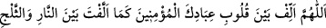

söndürüyordu. Onlar şöyle duâ ediyordu ki:
“Allah’ım! Ateşle karı ülfet ettirdiğin gibi mü’min kullarının kalplerini de ülfet
ettir.”
Büyüklerden birisi bu hadisi o meleklerin cüzlerinin yarısının ateş, yarısının kar
olduğu, birbirine karıştıkları ve aralarında bir mizac hâsıl olduğu mânâsına
hamletmiştir. Ancak zâhir olan şu ki birincisinin Allah’ın kudretine delâleti daha
fazladır. Çünkü bu zâtın söylediği mânâda zıd şeylerin bir arada toplanması,
terkiblerden oluşan eşyanın çoğunda mevcuttur.
el-Münâsebât’ta der ki: “Sonra Hz. Peygamber (s.a.)’in yedinci kat semâda İbrahim
(a.s.) ile karşılaşması, iki hikmet sebebiyledir. Birincisi, Rasûlullah (s.a.) onu sırtını
Beyt-i Ma‘mûr’a yaslamış olarak gördü. Beyt-i Ma‘mur, Kâbe’nin bir benzeridir. Yâni
onun hizâsında ve mukabilindedir. Melekler onu haccederler. Nitekim İbrahim (a.s.)
Kâbe’yi binâ etmiş ve insanları hacca dâvet etmiştir. İkincisi, Hz. Peygamber (s.a.)’in
hallerinin sonuncusu Beyt-i Haram’ı haccıdır. Bu yılda O’nunla birlikte yetmiş bin
müslüman da Kâbe’yi tavaf etmiştir. Rüyâ tâbiri alimlerine göre İbrahim (a.s.)’ın
rüyada görülmesi, hacca dâvettir. Çünkü hacca asıl dâvet eden ve Kâbe’nin temellerini
yükselten İbrahim (a.s.)’dır.
Rasûlullah (s.a.) devamla buyurur ki: “Sonra Sidretü’l-müntehâ’ya götürüldüm.”
Yâni Cebrâil götürdü. Sidretü’l-müntehâ, yedinci semânın üzerinde cennetin en uç
kenarında bir ağaçtır. Melekler yeryüzü halkından saîd kulların amellerini en son oraya
ulaştırırlar. Arşa âid hükümler ve rahmânî nurlar oraya iner.
Peygamber (s.a.) devamla diyor ki: “Bir de baktım ki onun yaprakları fillerin
kulakları gibiydi.” Yâni şekil bakımından fillerin kulaklarına benziyordu. Bu benzeme,
genişliği bakımından değil, yuvarlak oluşu bakımındandı. Çünkü bazı rivâyetlerde
geçtiği gibi onun bir yaprağı bütün mahlûkâtı gölgeler. “Meyveleri büyük testiler
gibiydi.” Bu ağaç, dünya ile âhireti birbirinden ayıran bir sınırdır. Dalları cennet ehli
için nimet, kökleri de cehennem ehli için zakkumdur. Dümdüz dalları tesbih, tahmid ve
şehâdetlerle inler. Hayret verici nağmeleri ruhları coşturur, onlarda türlü haller zuhur
eder. Orada, Rasûlullah (s.a.) semâdaki bütün meleklere vitir namazını kıldırmıştır.
Dolayısıyla Rasûlullah (s.a.) Beytü’l-makdis’te peygamberlerin imamı, Sidretü’l-
müntehâ’da ise meleklerin imamı oldu. Böylece Rasûlullah (s.a.)’in hem yeryüzü ehline
hem de semâ ehline üstünlüğü ortaya çıkmış oldu.
Bu ağacın kökünden dört nehir çıkar. İki nehir bâtındır. Yâni bu ağacın kökünden
çıktıktan sonra cennette kaybolurlar. Onlar kevser ve rahmet nehirleridir. İki nehir de
zâhirdir. Yâni bu ağacın kökünden çıktıktan sonra açıktan akıp giderler ve cenneti
geçerler. Bunlar da Mısır nehri Nil ve Kûfe nehri Fırat’tır.
Rasûlullah (s.a.) cennete girdi. Orada inciden yapılmış kubbeler gördü, oranın toprağı